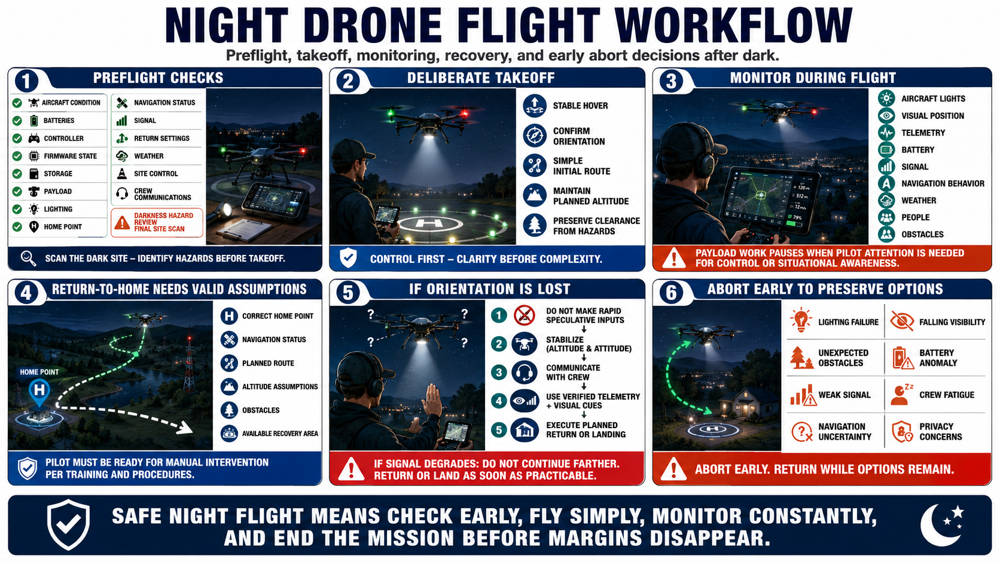

Mission Execution and Emergency Procedures
Connecting to LMS... Progress: in progress

Narration
Preflight checks should verify aircraft condition, batteries, controller, firmware state, storage, payload, lighting, home point, navigation status, signal, return settings, weather, site control, and crew communications. Conduct a final darkness-specific hazard review.
Use a deliberate takeoff. Establish stable control and confirm orientation before departing the recovery area. Keep the initial route simple and maintain altitude and clearance appropriate to the approved plan and site hazards.
During flight, monitor aircraft lights, visual position, telemetry, battery, signal, navigation behavior, weather, people, and obstacles. Payload work should pause whenever the pilot needs attention for basic control or situational awareness.
Return-to-home depends on correct home point, navigation, route, altitude assumptions, obstacles, and an available recovery area. Review those assumptions before launch and remain prepared for manual intervention according to training and procedures.
If orientation is lost, avoid rapid speculative inputs. Stabilize if possible, communicate, use verified telemetry and visual cues, and execute the planned return or landing action. If signal degrades, do not continue farther because control has not yet been lost.
Abort criteria must trigger early enough to preserve options. Lighting failure, unexpected obstacles, weak signal, navigation uncertainty, falling visibility, battery anomaly, crew fatigue, or privacy concerns can all justify ending the mission.